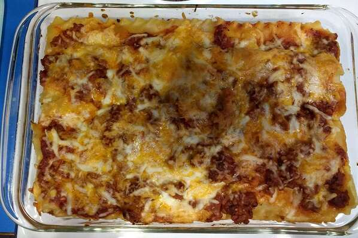

Brenda's Lasagna

Description
This lasagna recipe is one of the fastest and cheapest recipes around.
This recipe takes a total of 1 hr to make, with 30 minutes of prep and 30 minutes
of cook time. This recipe serves 8 and will be a delightful new addition to
your cook book
Ingredients
- 1(16 ounce) package lasagna noodles
- 1 pound lean ground beef
- salf and pepper to taste
- 1(16 ounce) jar spaghetti sauce
- 1 clove garlic, minced
- 1/2 pound shredded mozzarella cheese
- 1/2 pound shredded Cheddar cheese
- 1 pint ricotta cheese
Steps
- Step 1
Bring a large pot of lightly salted water to a boil.
Add pasta and cook for 8 to 10 minutes or until al dente; drain.
- Step 2
Preheat oven to 350 degrees F (175 degrees C). In a large skillet over medium-high
heat, brown beef and season with salt and pepper; drain. Stir in spaghetti sauce
and garlic and simmer 5 minutes.
- Step 3
In a medium bowl, combine mozzarella, Cheddar and ricotta; stir well. In 9x13 inch
pan, alternate layers of noodles, meat mixture and cheese mixture until pan is filled.
- Step 4
Bake in preheated oven for 30 minutes, or until cheese is melted and bubbly.